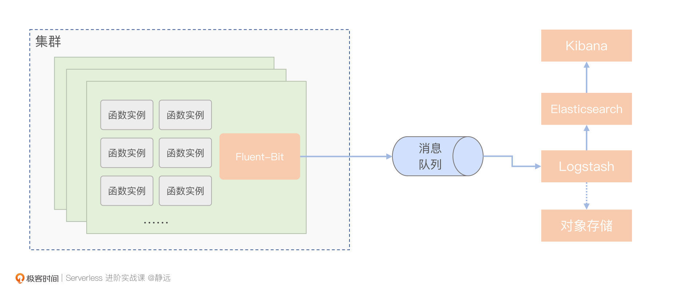
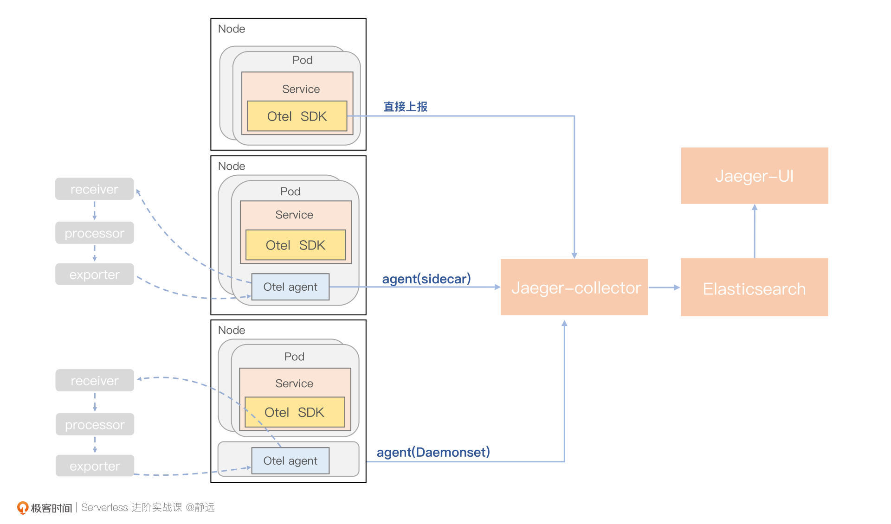

- 00 开篇词 Serverless是降本增效浪潮下的必然选择.md.html
- 00 思维构建 如何在新赛道下进阶Serverless能力？.md.html
- 01 生命周期：函数计算的基本流程是如何执行的？.md.html
- 02 触发器：如何构建事件源与函数计算的纽带？.md.html
- 03 高级属性：应对生产级别的应用，你需要掌握哪些技能？.md.html
- 04 冷启动：如何加快函数的第一次调用过程？.md.html
- 05 扩缩容：如何应对流量的波峰波谷？.md.html
- 06 流量转发：函数在不同情形下是如何执行的？.md.html
- 07 运行时（上）：不同语言形态下的函数在容器中是如何执行的？.md.html
- 08 运行时（下）：不同语言形态下的函数在容器中是如何执行的？.md.html
- 09 小试牛刀（一）：如何利用函数之间的调用解决业务问题？.md.html
- 10 小试牛刀（二）：如何突破VPC网络的速度限制？.md.html
- 11 WebIDE：如何让函数远离繁琐的本地开发模式？.md.html
- 12 编排：如何协调多任务的运行？.md.html
- 13 可观测（上）： 如何构建多维度视角下的Serverless监测体系？.md.html
- 14 可观测（下）： 如何构建多维度视角下的Serverless监测体系？.md.html
- 15 选型：不同阶段的数据应如何存储？.md.html
- 16 动手体验（一）：如何实现业务高效率地开发上线？.md.html
- 17 动手体验（二）：如何在云函数场景下实现一个有状态的服务？.md.html
- 18 实战指南：Serverless沙场老兵的一线使用经验.md.html
- 19 实战进阶（一）：Serverless “连接器” 的能力到底有多大？.md.html
- 20 实战进阶（二）：如何基于智能音箱开发一个BOT技能？.md.html
- 21 实战进阶（三）：传统的服务如何迁移到Serverless平台？.md.html
- 22 私有云：赛马时代的Serverless核心引擎谁能胜出？.md.html
- 23 实战进阶（四）：如何从0到1进阶一个开源引擎？.md.html
- 24 实战进阶（五）：如何从Serverless引擎蜕变成一个Serverless平台？.md.html
- 结束语 在实战中把握事物本质，不断革新.md.html
- 捐赠
14 可观测（下）： 如何构建多维度视角下的Serverless监测体系？
你好，我是静远。
上一节课，我们一起梳理了Serverless下可观测的重要性和构建可观测监测体系的要点，也结合案例，学习了指标的收集方法，了解了FaaS形态下指标上报的架构设计和注意事项。
今天这节课，我们继续来看可观测的另外两个数据支柱：日志和链路追踪。
日志
我们知道，通常在运维一个系统的时候，从监控大盘了解问题的大致轮廓后，经常会根据日志去查看具体的错误细节。
日志的作用是记录离散事件，并通过分析这些记录了解程序的整体行为，比如出现过哪些关键数据，调用过哪些方法。也就是说，它能够帮我们定位问题的根源。
在函数计算场景下，我们需要考虑到用户日志与系统日志两种类型。其中，用户日志记录的主要是用户函数代码中业务流程发生的过程。这部分日志信息是在函数维度上独立收集的，并且用户可以通过前端控制台查看相关日志信息。而系统日志，则是整个平台侧发生事件的信息记录，最终汇总在一起，供平台侧的运维或开发人员排查问题。
日志数据源
那么日志应该什么时候打印又应该怎么打印呢？
首先，我们需要明确日志的级别。以系统日志为例，常见的包括Error、Info和Warn，分别表示错误日志、信息日志以及警告日志，在开发调试过程中可能还会用到Debug类型。我们需要根据实际的执行逻辑来设定不同的等级。
其次，在添加日志时，我们要尽可能地收敛错误信息，尽量避免重复信息的打印，因为频繁的IO不仅会加大日志采集的工作量，更会影响服务性能。
再次，日志应该尽量打在每个服务模块的入口和出口，服务内方法之间的调用和错误信息，也应该尽量通过传递的方式上报，而不是每个方法内都打印一条日志。
比如函数计算中请求的调度过程。调度模块中可能涉及到获取元信息、鉴权、并发度限制、获取函数实例信息等等一系列串行过程，每一个过程都可能包含多个方法之间的调用，其中任意一步出现问题都会导致调度失败。那么，我们在开发时就要尽可能给每个方法都添加一个error类型的返回值，在出现错误后，只需按照递归调用栈逐级返回，最终在入口处打印一条即可。这样可以有效减少重复信息的打印次数。
另外，对于函数开发者用到的用户日志，我也有两条使用上的建议。
一方面，减少print的使用，控制整体的信息大小。为了方便在函数这个黑盒中快速定位问题，一些开发者习惯性地将print当成Debug工具来使用，但因为平台侧都会对单次的函数执行日志有一定限制，所以在函数开发过程中应该尽量减少无用信息的打印。
另一方面，关注Event。Event作为函数入口的基本传参，携带了请求源的关键信息，关注Event，也可以方便后续的溯源。
日志的采集与清洗
有了日志数据后，我们就可以进行收集了。
系统日志的数据都会写入到固定路径的文件中，而用户日志，通常都是采用DaemonSet日志组件进行收集。所以，一般函数实例内的日志文件都会存放在节点的挂载路径下，或者是集群内的持久卷中。
前面我们也提到用户日志是以函数为粒度的，而为了缓解不断增长的日志数据造成的节点磁盘的压力，通常会一次请求对应一个日志文件，请求结束则上报并删除文件内容。而系统日志则可以通过设置“定时删除任务”来处理。
在开源日志收集器的选型上，常用的有Logstash，Fluentd，Fluent-Bit以及Vector等比较不错的采集工具，他们之间各有不同的优势。
具体的对比，你可以参考Stela Udovicic 2021年12月在ERA Software’s blog的文章，她指出，我们很难找到一个完美的日志收集器，选择正确的日志收集器主要取决于你自己的特定需求。
比如，如果你需要资源占用较少的日志收集器，那么使用Vector或者Fluent-Bit就是一个不错的选择，而不是占用资源较高的Logstash。如果你需要寻找不具供应商色彩的收集器，那么Fluentd和Fluent-Bit是不错的选择。
在函数计算平台的构建中，通常我们会结合这几种工具的能力共同部署，你也可以根据具体的业务情况自己选择。这里，为了便于你理解他们各自的优势，我画了一个示意图，来看一下数据采集的具体流程。

在采集数据时，由于Fluent-Bit在Kubernetes集群等容器化环境中的运行比较出色，所以通常我们会使用轻量的Fluent-Bit对日志数据进行整体的上报，如果是集群的日志信息，则会以DaemonSet的形式部署。
因为Logstash过滤功能强大，但资源耗费多，所以并不能像Fluent-Bit那样以DaemonSet的形式部署在整个集群，只需部署少量虚机实例，并利用Logstash进行整体的数据清洗即可。
如果考虑到峰值问题，比如前面提到的某一时刻存在请求高峰导致日志量显著增大，也可以利用kafka缓冲一轮。最后，再由Logstash将过滤后的数据交由相应的存储服务。
日志的存储与检索
最后，我们再说日志的存储和检索。
Logstash支持丰富的插件，除了可以支持像kafka、本地文件等多种数据输入源，输出的部分同样也支持与Elasticsearch、对象存储等多种数据存储服务的对接。
其中，Elasticsearch是一个分布式、高扩展、高实时的搜索与数据分析引擎，配合Kibana这种数据可视化工具，能快速搜索和分析我们上传的日志。
为了方便利用Kibana进行快速筛查，我们在日志打印阶段就应该以键值对的形式标记出关键信息，这样就可以在Kibana根据key进行筛查，比如：
{
"level":"info", //日志等级
"ts":1657957846.7413378, // 时间戳
"caller":"apiserver/handler.go:154", // 调用的代码行数
"msg":"service start", // 关键信息
"request_id":"41bae18f-a083-493f-af43-7c3aed7ec53c",
"service":"apiserver" // 服务名称
}
另外，如果需要对日志文件进行溯源，或者需要考虑为函数计算平台拓展一些长期的数据报表功能，也可以让Logstash对接一个对象存储服务。
链路
了解了指标和日志两个可观测数据之后，我们再去看第三个数据，链路。
除了代码出错，在一些延迟敏感的场景下，性能分析也是必不可少的，尤其是函数计算这种架构复杂，模块交互较多的服务。这个时候，链路追踪功能就派上了用场。
在函数计算场景下，它不仅可以提高函数计算系统的可观察性，帮助系统管理员检测、诊断系统的性能问题以保证预期的服务水平，还可以帮助开发者追踪函数的执行过程，快速分析、诊断函数计算架构下的调用关系及性能瓶颈，提高开发和诊断效率。
链路信息
我们先说链路信息的获取。对用户而言，更关心的是端到端的整体耗时，而除了代码本身的执行，其余耗时主要发生在冷启动的准备阶段。因此，平台可以默认提供给用户函数总耗时以及冷启动过程的耗时，其中也可以包括准备代码、运行时初始化等步骤的耗时。
而在复杂的业务场景中，往往会涉及到函数与函数或者函数与其他云服务之间的调用。这时，我们可以为开发者提供自定义的链路支持，将链路信息记录在相应的结构体中（如Header），就可以完整地串联起整个外部的调用链路。而内部的调用链路，也可以通过上下文的形式用SDK去处理。
通过这种与内置链路结合的方式，平台可以有效地帮助用户定位出超时、性能瓶颈以及涉及多个云服务关联等类似的故障问题。
在平台层面，则可以根据模块之间的关系以及系统架构的实际情况来构建链路，整体思路和用户侧的链路构建差不多。不过需要注意的是，并不是链路信息越详细越好，因为链路追踪本身也需要耗费一定资源，所以最好根据实际的运维需求来构建。
链路拓扑的可视化
那么，我们如何追踪链路信息并友好地展示出来呢？常用的解决方案，一般是基于标准的OpenTelemetry协议，利用其提供的SDK和Otel Agent完成对链路Span的生成、传播和上报，最终通过分布式追踪系统（如Jaeger）进行收集，形成链路拓扑的可视化。
结合函数计算的特点，这里我也给出了一个基本的链路追踪功能架构图供你参考。从图中可以看出，OpenTelemetry可以通过三种方式来上报链路信息，包括直接使用SDK、Agent Sidecar和Agent DaemonSet，你可以根据自己的业务情况选择一种，或者多种组合方式。

以Jaeger为例，节点服务可以使用Opentelemetry 的SDK或者Agent上报链路信息，通过Jaeger Collector统一收集，并由ElasticSearch进行存储，最终由Jaeger-Query负责展示数据查找。
到这里，我们来解答一下上一节课的课后思考题，Metrics指标数据是否也可以用此方式来收集呢？完全可以，基于Otel Agent，我们可以将数据发往Kafka、Promethues等数据存储后端的Backends。
小结
最后，我来小结一下这两节课的内容。这两节课，我们一直在讨论函数计算平台下可观测体系的解决方案。我们可以按照可观测中指标、日志和链路这三要素的架构去构建解决方案。
首先，监控指标是指对系统中某一类信息的统计聚合。在函数计算平台上的监控，不仅需要考虑常见资源指标，比如CPU、Memory利用率等，还需要考虑用户实际关心的业务指标，比如函数调用次数、错误次数、执行时间等。
再说日志的构建。日志起到的作用，更像是在“保留现场”。通过日志，我们可以分析出程序的行为，比如曾经调用过什么方法，操作过哪些数据等。在打印日志时，我们也需要关注函数在关键节点上的输出。
最后，链路的追踪是通过对请求打标、透传、串联还原完整的请求过程。追踪主要是为了排障和优化，比如分析调用链的哪一部分、哪个方法出现了错误或阻塞，输入输出是否符合预期等。服务之间的链路信息耶可以通过Header进行传递，而整个数据过程其实和日志采集类似。但从形态上来看，日志更像是离散的事件，而链路追踪更像是连续的事件。
思考题
好了，这节课到这里也就结束了，最后我给你留了一个思考题。
随着OpenTelemetry的盛行，原则上使用一套Library或SDK，就可以自动地收集三种数据，然后由统一的Collector处理，但实际应用中，还会受限于新老系统、Otel的成熟度，你是怎么处理的？
欢迎在留言区写下你的思考和答案，我们一起交流讨论。感谢你的阅读，也欢迎你把这节课分享给更多的朋友一起交流学习。
© 2019 - 2023 Liangliang Lee. Powered by gin and hexo-theme-book.